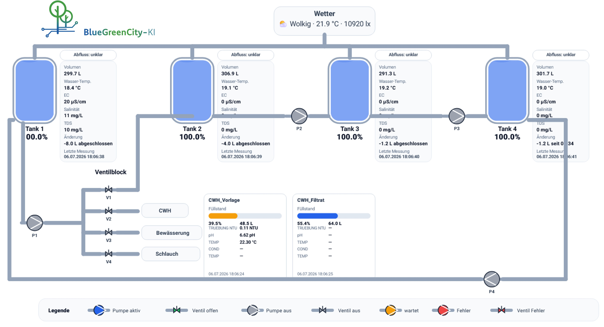

Technical concepts for cooling and intelligent rainwater management in the Blue Green Yard.
The Blue Green Yard combines blue-green infrastructure with water-based cooling strategies to improve the microclimate and reduce heat stress.

• Stored rainwater
• Resource-efficient use
• Reduced potable water demand
• Water-based cooling
• Blue-green infrastructure
• Local microclimate improvement
• Environmental measurements
• Water system monitoring
• Operational data
• Central data platform
• Visualization
• Performance analysis
Improvement of local thermal conditions.
Use of harvested rainwater instead of potable water.
Combination of water management and urban cooling.
The storage system combines rainfall forecasts, current tank levels and hydraulic control to create storage capacity before expected rain events.
• Open-Meteo
• 1-hour forecast window
• Expected precipitation
• Current water volume
• Available capacity
• Minimum / maximum levels
• Pumps
• Valves
• Hydraulic connections
Each roof area generates a different inflow. Therefore, every tank uses its own rainfall-to-volume factor.
Actual rainfall is recorded by the weather station.
The real increase in tank volume is determined.
A new observed inflow factor is calculated.
Recent valid events gradually update the inflow model.
• Free storage before rain
• Only required volume moved
• Automatic refill
• Pump 1 + Valve 2
• CWH has priority
• Starts at ≥ 95 %
• Target approximately 80 %
• Independent of forecast
• Tank level monitoring
• Runtime as fallback
Pump 1 + Valve 1
Pump 2
Pump 3
Pump 4